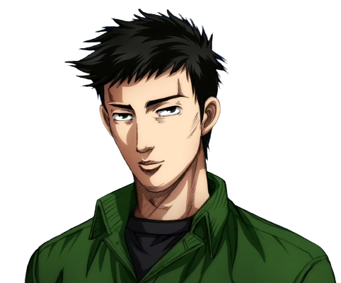
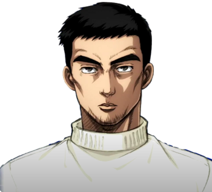

The Momiji Line is the home course of the Seven Star Leaf team. It is located in Nikko, Tochigi. The course has a lot of gutters, of which five are uncovered. At the moment of writing, only three of the gutters are uncovered. The rest has been covered in the meanwhile.
Toru Suetsugu
Toru Suegutsu is an average skilled downhill racer. He drives a Mazda Eunos Roadster NA Special Package (NA6CE), which he controls pretty well. During the race, Takumi overtakes him using the Gutter Technique on the uncovered gutters. Driven by the eagerness to win, Suetsugu tries to use the same technique, but fails. The front right flank of his car sinks into the uncovered gutter, and Toru Suetsugu crashes his Miata.
Atsuro Kawai
After having his battle with Takumi, Suetsugu warns Atsuro Kawai to try to cover up the gutters, since Project D has the skill to use any empty space to their advantage. Since Kawai’s car is a Nissan Skyline 25GT Turbo (ER34), which is known for grip racing and power, he plans to take corners as wide as possible and simply outrun Keisuke. Keisuke Takahashi looks at this technique from behind, and eventually overtakes Atsuro Kawai by having a better exit speed.